CAPÍTULO 3 - Arco e ângulo central
Arco de circunferência
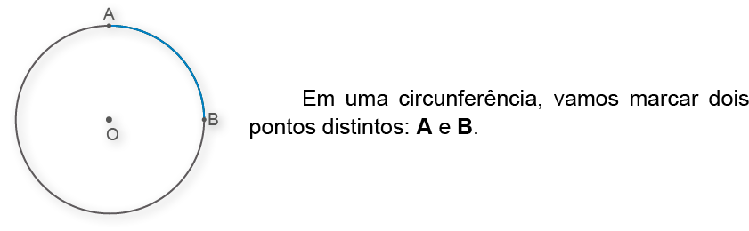
Ao marcar os pontos A e B, dividimos a circunferência em duas partes, denominadas arcos.
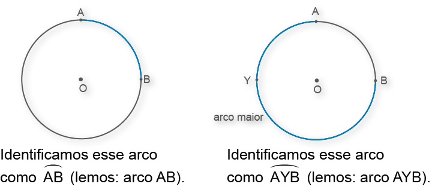
Ângulo central
O ângulo que tem como vértice o centro da circunferência denomina-se ângulo central.
A medida de um arco 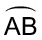, em graus, corresponde à medida do ângulo central β.
A circunferência tem 360º. Observe as medidas de seus arcos:
med (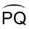) = 120º
med (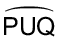) = 240º
arco menor
221

-
1.Observe a figura e indique:
![Uma circunferência com os pontos A, B, C, D. A letra A está na parte debaixo à esquerda. A letra B, na parte de cima à esquerda. A letra C, acima e à direita. A letra D à direita da circunferência, na mesma altura que o ponto central não identificado. Três seguimentos ligam A com o ponto central, B com o ponto central. Letra C com o ponto central. A união dos seguimentos formam duas figuras que lembram um triângulo porém com a base arredondada . O ângulo interno AB forma 105 graus. O ângulo BC, 60 graus.](../../resources/images/8ANO_U9_image/M8A_8ano_un10-pg213-img01.png)
-
a) med (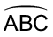);
b) med ();
c) med (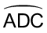);
d) med (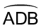).
-
2.Sendo O o centro da circunferência, determine o valor de x.
3. A circunferência da figura tem 6 cm de diâmetro. Indique:
-
a) a medida do arco ;
b) o comprimento dessa circunferência (use π = 3,14);
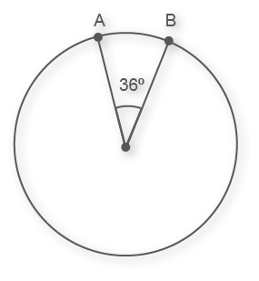
4. Quanto mede, em graus, o menor arco formado pelos ponteiros do relógio quando marca 5 horas?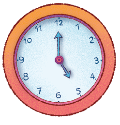
5. Na figura seguinte, a medida do ângulo central x corresponde a 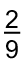 da medida angular do arco completo da circunferência. Determine a medida do arco maior () dessa circunferência.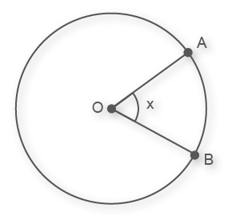
222
Ângulo inscrito
O ângulo que tem como vértice um ponto pertencente à circunferência e os lados secantes a ela denomina-se ângulo inscrito.
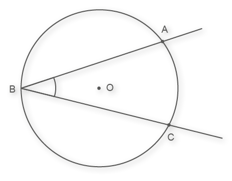
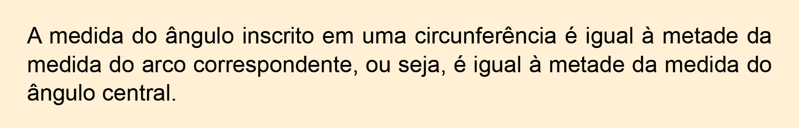
Vamos demonstrar como essa propriedade ocorre em três situações distintas.
Situação 1
Um dos lados do ângulo inscrito coincide com o diâmetro da circunferência.
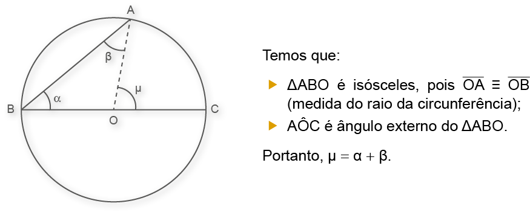
Como α = β, então:
μ = α + α ⇒ μ = 2α ⇒ α = 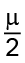
Logo, α = 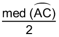.
223
Situação 2
O centro da circunferência é interno ao ângulo inscrito.
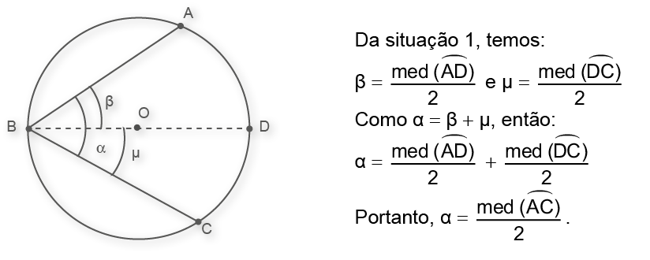
Situação 3
O centro da circunferência é externo ao ângulo inscrito.
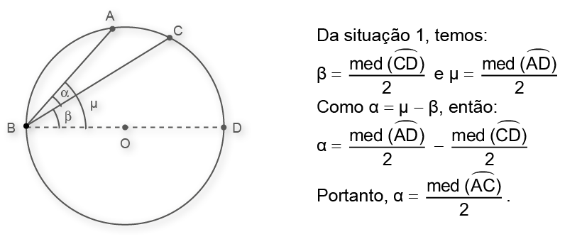
224
-
1. Na circunferência, temos um ângulo inscrito e seu respectivo ângulo central. Calcule o valor de x e a medida de cada ângulo.
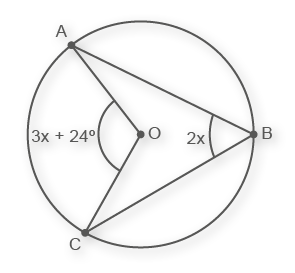
-
2. Determine as medidas de x, y e z, sabendo que a medida do arco 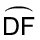 é igual a 124º.
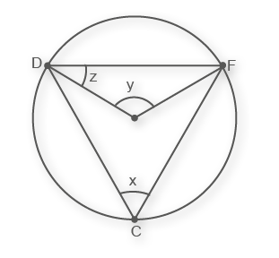
-
3. Determine as medidas dos ângulos indicados nas figuras.
4. Na figura, o ângulo está inscrito em uma semicircunferência e MO representa o diâmetro. De acordo com essas informações, responda:
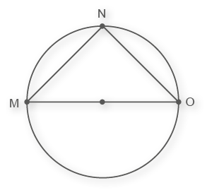
-
a)Qual é a medida do arco ?
b)Qual é a medida do ângulo inscrito na semicircunferência?
c)Qual é a classificação do ΔMNO quanto à medida dos seus ângulos?
d)Todo triângulo inscrito em uma semicircunferência é retângulo?
5.Sabendo que a medida do arco 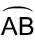 é igual a 140º, determine as medidas de a, b e c, respectivamente.
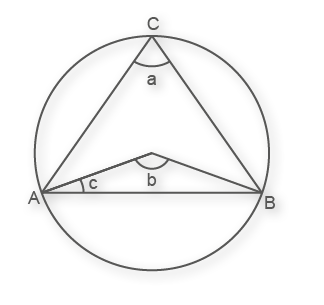
-
a)50º, 140º e 30º;
b)80º, 140º e 25º;
c)70º, 140º e 20º;
d)70º, 25º e 140º.
225
- Probabilidade de um evento ocorrer
Nos anos anteriores, vimos que alguns eventos têm mais chance que outros de ocorrer. Nesse sentido, vamos considerar um experimento aleatório comum em alguns programas de televisão: a “roleta da sorte”. Abaixo, cada número da roleta representa um prêmio que o telespectador pode ganhar e todos têm a mesma chance de sair.
Sérgio Bonfim dos Santos
O conjunto formado pelos resultados possíveis é chamado de espaço amostral e, neste caso, temos como possibilidades: 1, 2, 3, 4, 5, 6, 7 e 8. Para sabermos qual é a probabilidade de um evento ocorrer podemos efetuar o seguinte cálculo:
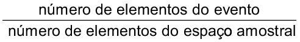
Por exemplo, vamos determinar qual é a probabilidade do número 8 sair na roleta:
- número de elementos do evento é 1, pois só há uma parte do círculo com o número 8.
- número de elementos do espaço amostral é 8, pois têm-se 8 possibilidades de resultados.
Calculando, temos que a probabilidade de sair o número 8 na roleta é igual a 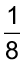. De forma análoga, podemos determinar a probabilidade de cada um dos demais números. Assim, a soma das probabilidades é dada por:
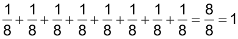
- Qual é a probabilidade do número 8 sair, se houver 16 números na roleta?
226
- Princípio multiplicativo
Um telespectador ganhou a oportunidade de rodar duas vezes a “roleta da sorte”. Quantos resultados diferentes podem sair ao rodar duas vezes a mesma roleta?
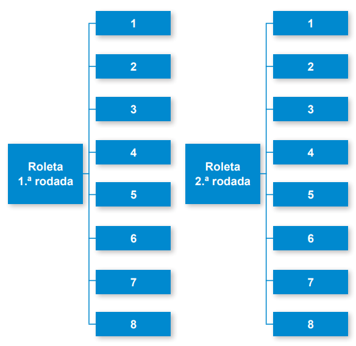Para calcularmos a quantidade de possibilidades de combinações de resultados, basta multiplicarmos a quantidade disponível na primeira rodada pela quantidade disponível na segunda rodada.
8 × 8 = 64 resultados diferentes.

-
1.Quantas possibilidades de diferentes resultados podem sair, rodando a mesma roleta três vezes?
227
-
1.Observe a figura e as afirmações a seguir.
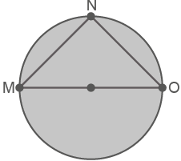
I. MO é raio.
II. MN é corda.
III. MO é diâmetro.
IV. MO é corda.
As afirmações verdadeiras são:
-
a)I, II e III;
b)II, III e IV;
c)I, II e IV; d)I, III e IV.
-
2. As posições ocupadas pelas retas r, s, t e u em relação à circunferência são, respectivamente:
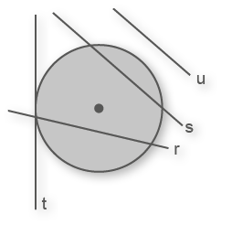
-
a)tangente, secante, externa e secante;
b)secante, secante, externa e tangente;
c)externa, secante, tangente e secante;
d)secante, secante, tangente e externa.
-
3. Sendo O o centro da circunferência, determine a medida do ângulo 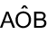.
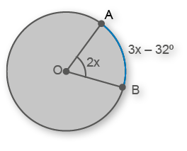
b)48º
c)64º
d)76º
-
4. A medida do ângulo a na figura é igual a:
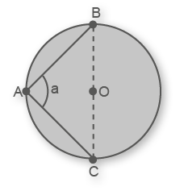
b)90º
c)135º
d)180º
-
5.Na figura, a medida do ângulo central e a medida do ângulo inscrito são, respectivamente:
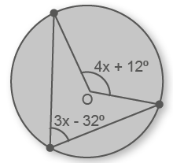
b)76º e 38º;
c)34º e 68º;
d)70º e 35º.
-
6.Na circunferência, CD representa a medida do diâmetro. Sendo assim, a medida do arco 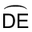 é igual a:
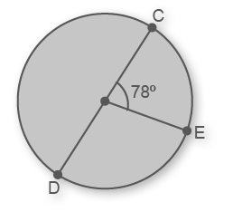
b)104º
c)102º
d)64º
-
7.Em um círculo de centro O, o arco mede 80º. Logo, o valor do ângulo β é:
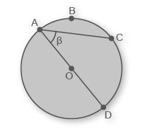
b)100º
c)30º
d)50º